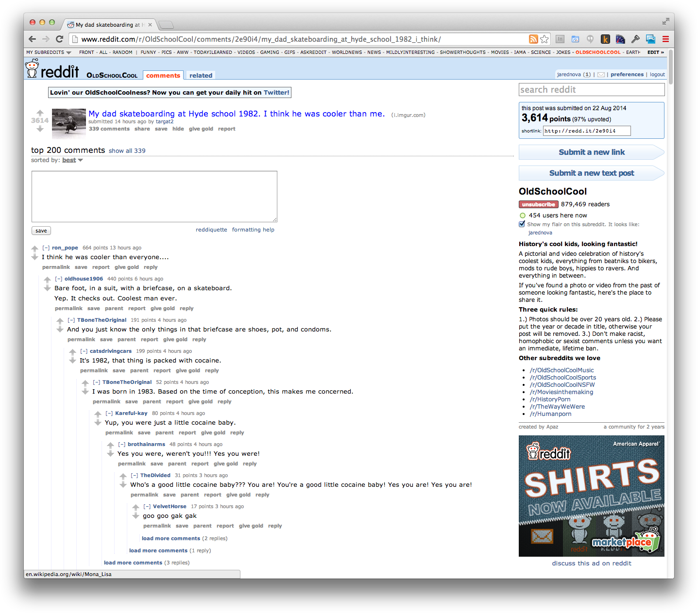
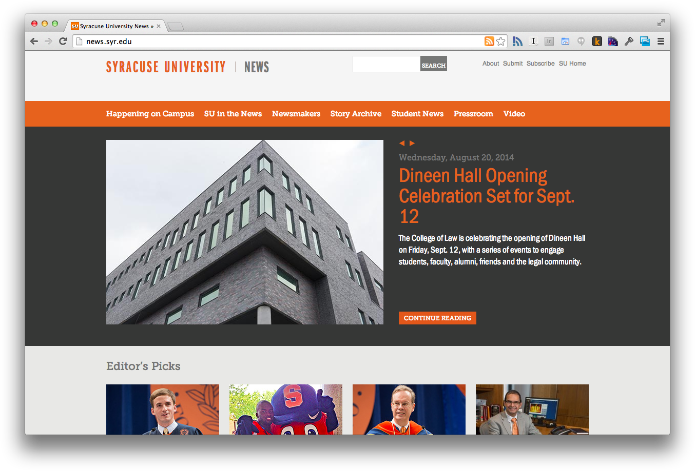

Essential Tools for Building a WordPress Publication
Jared Novack
@jaredNova


- Design ... for readers
- Build ... for developers
- Manage ... for editors

Commenting/Interacting

Here's what we're doing with your money
Mentioning Corporate Sponsors
Tool #2
Template Language
(Timber)
This is Tito (Mr. Designer Man)
Favorite Justices
- John Marshall
- Thurgood Marshall
- Sandra Day O'Connor
<?php echo $list_title; ?>
<?php
foreach( $justices as $justice ) {
echo '- '.$justice.'
';
}
?>
{{list_title}}
{% for justice in justices %}
- {{justice}}
{% endfor %}
standard wp screen
Tool #3
Advanced Custom Fields

Let's start with the basics
Related Stories
Relationship Field
I need custom fields, but only sometimes
Conditionals
http://timber.upstatement.com